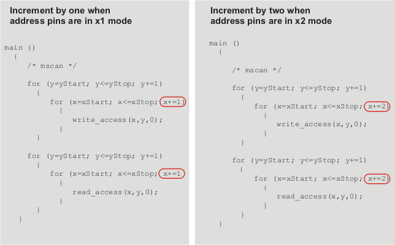

Setting up the x2 mode in the APG program file
Each access definition is covering two test system cycles. By contrast to the x1 mode,
x2 mode increments each access definition (write_access
and read_access) by two due to the address pins set up in
x2 mode (see following figure).
